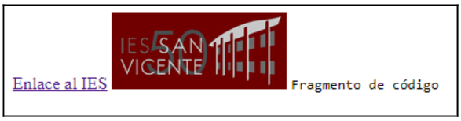
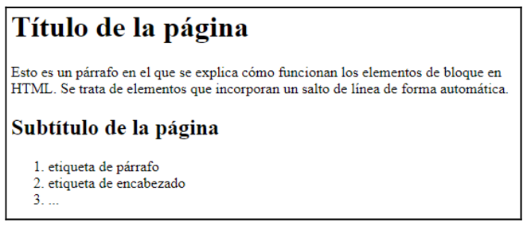
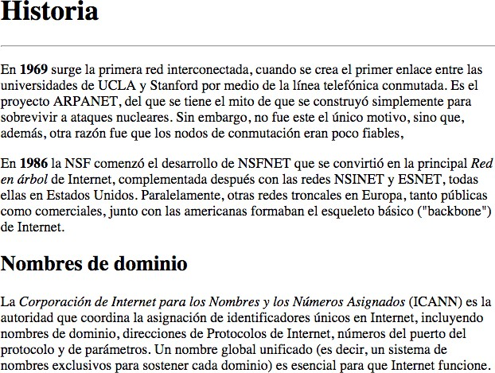
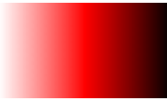
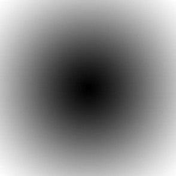
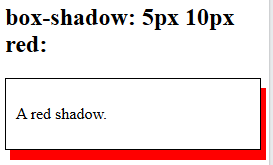
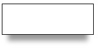
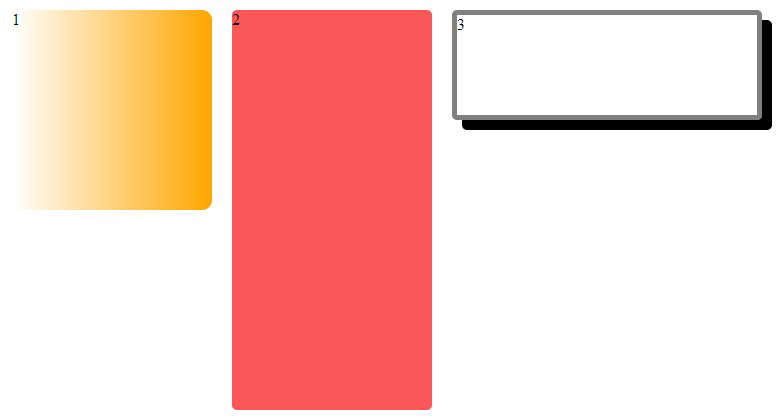
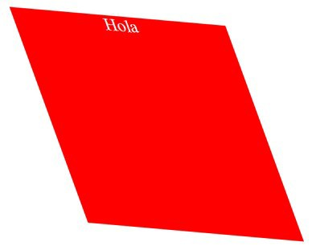

Fonaments d'estructura semàntica, tipografia, selectors, model de caixa i estils visuals moderns Fundamentos de estructura semántica, tipografía, selectores, modelo de caja y estilos visuales modernos
Implantació d'Aplicacions Web (IAW) — 2n ASIR · Bloc 2: Disseny Web Implantación de Aplicaciones Web (IAW) — 2º ASIR · Bloque 2: Diseño Web
Una pàgina web és un document de text pla amb una sèrie d'etiquetes (tags) que delimiten l'estructura, el contingut i el significat de cada element. L'estàndard actual és HTML5, regulat pel consorci internacional W3C i el grup WHATWG. Una página web es un documento de texto plano con una serie de etiquetas (tags) que delimitan la estructura, el contenido y el significado de cada elemento. El estándar actual es HTML5, regulado por el consorcio internacional W3C y el grupo WHATWG.
<!-- Francisco Javier Blasco Boronat -->
<!DOCTYPE html>
<html lang="ca">
<head>
<meta charset="UTF-8">
<meta name="viewport" content="width=device-width, initial-scale=1.0">
<meta name="author" content="Francisco Javier Blasco Boronat">
<meta name="description" content="Descripció del lloc web per a cercadors">
<title>La meua primera pàgina HTML</title>
</head>
<body>
<p>Francisco Javier Blasco Boronat</p>
</body>
</html>En HTML5 és extremadament senzill i no distingeix majúscules de minúscules. Indica al motor del navegador que renderitze el document en mode estàndard (evita el mode quirks dels navegadors antics). En HTML5 es sumamente simple y no distingue mayúsculas de minúsculas. Indica al motor del navegador que procese el documento en modo estándar (evitando el modo quirks de navegadores antiguos).
Arrel del document. L'atribut lang és crític per a l'accessibilitat (lectors de pantalla) i el posicionament SEO internacional (ca, es, en...).
Raíz del documento. El atributo lang es crítico para accesibilidad (lectores de pantalla) y posicionamiento SEO internacional (ca, es, en...).
Conté les metadades que no es mostren directament a la pantalla: codificació de caràcters (<meta charset="UTF-8">) per a accents i caràcters especials, títol a la pestanya (<title>), i vinculació de fulls d'estils o scripts.
Contiene los metadatos que no se muestran directamente en la pantalla: codificación de caracteres (<meta charset="UTF-8">) para tildes y caracteres especiales, título en pestaña (<title>), y vinculación de hojas de estilo o scripts.
<meta name="viewport" content="width=device-width, initial-scale=1.0">: Adapta l'amplària lògica de renderitzat a l'amplària real del dispositiu mòbil, evitant que el mòbil aplique un zoom reductor artificial.
<meta name="viewport" content="width=device-width, initial-scale=1.0">: Adapta el ancho lógico de renderizado al ancho real del dispositivo móvil, evitando que el móvil aplique un zoom reductor artificial.
Crea amb el teu editor de codi (VS Code) un fitxer anomenat 01_pagina1.html amb un comentari inicial amb el teu nom, títol “La meua primera pàgina HTML”, joc de caràcters UTF-8, metadada d'autor, configuració del viewport per a mòbil i un paràgraf al <body> amb el teu nom.
Crea con tu editor de código (VS Code) un archivo llamado 01_pagina1.html con un comentario inicial con tu nombre, título “La meua primera pàgina HTML”, juego de caracteres UTF-8, metadato de autor, configuración del viewport para móvil y un párrafo en el <body> con tu nombre.
Tot element en HTML té un comportament de visualització per defecte (propietat CSS display):
Todo elemento en HTML tiene un comportamiento de visualización por defecto (propiedad CSS display):
width / height).No admiten propiedades de dimensiones de anchura o altura (width / height).<span>, <a>, <strong>, <em>, <code>, <img>.
padding), width i height.Admiten márgenes, rellenos (padding), width y height.<p>, <div>, <h1>-<h6>, <hr>, <header>, <main>.
| Etiqueta | Funció SemànticaFunción Semántica | ComportamentComportamiento |
|---|---|---|
<h1> ... <h6> |
Encapçalats jeràrquics. L'<h1> és el títol principal del document (recomanat únic per pàgina).Encabezados jerárquicos. El <h1> es el título principal del documento (recomendado único por página). |
Block |
<p> |
Paràgraf de text regular amb marge vertical automàtic.Párrafo de texto regular con margen vertical automático. | Block |
<strong> / <b> |
<strong> afegeix importància o urgència semàntica (a més de negreta visual). <b> és merament estilístic.<strong> añade importancia o urgencia semántica (además de negrita visual). <b> es meramente estilístico. |
Inline |
<em> / <i> |
<em> indica èmfasi o to de veu distint; <i> és cursiva visual o termes tècnics/idiomes estrangers.<em> indica énfasis o tono de voz distinto; <i> es cursiva visual o términos técnicos/idiomas extranjeros. |
Inline |
<span> |
Contenidor genèric en línia per a aplicar estils CSS o seleccionar fragments amb JavaScript sense alterar el flux.Contenedor genérico en línea para aplicar estilos CSS o seleccionar fragmentos con JavaScript sin alterar el flujo. | Inline |
<br> / <hr> |
<br> trenca la línia manualment. <hr> representa una fractura temàtica (línia horitzontal divisòria).<br> rompe la línea manualmente. <hr> representa una fractura temática (línea horizontal divisoria). |
Especials buides (sense tancament)Especiales vacías (sin cierre) |
Crea el document 02_curriculum.html amb un títol de pestanya amb el teu nom, un encapçalat <h1> per a “Dades personals”, paràgrafs amb adreça/telèfon, un altre <h1> per a “Formació”, i subseccions <h2> per a “Idiomes” i “Estudis”.
Crea el documento 02_curriculum.html con un título de pestaña con tu nombre, un encabezado <h1> para “Datos personales”, párrafos con dirección/teléfono, otro <h1> para “Formación”, y subsecciones <h2> para “Idiomas” y “Estudios”.
Crea 03_historialnternet.html reproduint el text sobre ARPANET i la creació d'Internet. Utilitza <h1> amb una línia divisòria <hr> a sota, anys en negreta <strong>, sigles o termes tècnics en cursiva <em>, i un segon apartat <h2> per a “Noms de domini”.
Crea 03_historialnternet.html reproduciendo el texto sobre ARPANET y la creación de Internet. Utiliza <h1> con una línea divisoria <hr> debajo, años en negrita <strong>, siglas o términos técnicos en cursiva <em>, y un segundo apartado <h2> para “Nombres de dominio”.

En versions antigues d'HTML, tota la maquetació es feia mitjançant <div id="header">, <div id="menu">, <div id="footer">. HTML5 va introduir etiquetes semàntiques que atorguen significat estructural real tant als motors de cerca com a les eines d'accessibilitat:
En versiones antiguas de HTML, toda la maquetación se realizaba mediante <div id="header">, <div id="menu">, <div id="footer">. HTML5 introdujo etiquetas semánticas que otorgan significado estructural real tanto a los motores de búsqueda como a las herramientas de accesibilidad:
<header><nav><main><section><article><aside><footer><figure>CSS (Cascading Style Sheets) s'encarrega de separar completament la capa de presentació visual de l'estructura semàntica d'HTML. La sintaxi bàsica es compon d'un selector, seguit d'un bloc de declaracions amb parelles propietat: valor;. CSS (Cascading Style Sheets) se encarga de separar completamente la capa de presentación visual de la estructura semántica de HTML. La sintaxis básica se compone de un selector, seguido de un bloque de declaraciones con pares propiedad: valor;.
S'escriu directament dins l'etiqueta HTML: Se escribe directamente dentro de la etiqueta HTML:
<p style="color: red;">...</p>Definit a la capçalera de la pàgina: Definido en la cabecera de la página:
<style>
p { color: red; }
</style>Molt útil per a exercicis ràpids i proves aïllades. Muy útil para ejercicios rápidos y pruebas aisladas.
Vinculat des del <head>:
Vinculado desde el <head>:
<link rel="stylesheet" href="styles.css">| Propietat CSS | Valors comuns | Descripció |
|---|---|---|
font-family |
Arial, Helvetica, sans-serif |
Família tipogràfica amb font de reserva (fallback).Familia tipográfica con fuente de reserva (fallback). |
font-size |
1rem, 16px, 1.2em, 14pt |
Grandària del text. Es recomana rem per accessibilitat.Tamaño del texto. Se recomienda rem por accesibilidad. |
font-weight |
normal, bold, 100 - 900 |
Gruix del traç de la lletra.Grosor del trazo de la letra. |
color |
#ff0000, rgb(0, 128, 0), blue |
Color del text.Color del texto. |
text-align |
left, right, center, justify |
Alineació horitzontal del text en elements en bloc.Alineación horizontal del texto en elementos en bloque. |
text-decoration |
none, underline, line-through |
Subratllat, ratllat o supressió de la línia dels enllaços.Subrayado, tachado o supresión de la línea de los enlaces. |
line-height |
1.5, 1.6, 24px |
Interlineat vertical entre línies de text (essencial per a la llegibilitat).Interlineado vertical entre líneas de texto (esencial para la legibilidad). |
Crea el fitxer 04_stilsText.html amb estils dins d'una etiqueta <style> al <head>: <h1> amb lletra Arial de 30pt, color roig i subratllat; <h2> amb Arial de 20pt, blau i alineat a la dreta; i <p> amb Times New Roman de 12pt, color gris i text justificat.
Crea el archivo 04_stilsText.html con estilos dentro de una etiqueta <style> en el <head>: <h1> con letra Arial de 30pt, color rojo y subrayado; <h2> con Arial de 20pt, azul y alineado a la derecha; y <p> con Times New Roman de 12pt, color gris y texto justificado.
Els selectors permeten apuntar amb màxima precisió als elements del document HTML que volem estilitzar: Los selectores permiten apuntar con máxima precisión a los elementos del documento HTML que queremos estilizar:
* : Universal (selecciona absolutament tots els elements).Universal (selecciona absolutamente todos los elementos).p, h2, div : D'etiqueta o tipus d'element.De etiqueta o tipo de elemento..miClase : De classe (aplicable a qualsevol element amb class="miClase").De clase (aplicable a cualquier elemento con class="miClase").#miID : D'identificador únic (id="miID"). Ha de ser únic per pàgina.De identificador único (id="miID"). Debe ser único por página.p.miClase : Paràgrafs que tinguen expressament la classe miClase.Párrafos que tengan expresamente la clase miClase.p .miClase : Descendent: qualsevol element amb classe miClase que estiga dins d'un <p>.Descendente: cualquier elemento con clase miClase que esté dentro de un <p>.h1, h2, p : Agrupació: aplica la mateixa regla a múltiples selectors separats per comes.Agrupación: aplica la misma regla a múltiples selectores separados por comas.p span em : Descendent niat múltiple (un <em> dins d'un <span> dins d'un <p>).Descendente anidado múltiple (un <em> dentro de un <span> dentro de un <p>).Quan dues o més regles afecten el mateix element, el navegador calcula un pes numèric de 4 dígits: Cuando dos o más reglas afectan al mismo elemento, el navegador calcula un peso numérico de 4 dígitos:
| Nivell | Tipus de Selector | Pes | Exemple |
|---|---|---|---|
| A (Màxim) | Estil en línia directeEstilo en línea directo | 1, 0, 0, 0 | <p style="color: red;"> |
| B | Selectors d'Identificador (ID)Selectores de Identificador (ID) | 0, 1, 0, 0 | #titol-principal |
| C | Classes, atributs i pseudoclassesClases, atributos y pseudoclases | 0, 0, 1, 0 | .actiu, [type="text"], :hover |
| D (Mínim) | Etiquetes i pseudoelementsEtiquetas y pseudoelementos | 0, 0, 0, 1 | p, h2, ::before |
!important? Sobreescriu qualsevol especificitat anterior. En les bones pràctiques d'arquitectura web i en aquest portal està terminantment prohibit perquè impossibilita la modularitat i crea deute tècnic.
¿Y qué ocurre con !important? Sobrescribe cualquier especificidad anterior. En las buenas prácticas de arquitectura web y en este portal está terminantemente prohibido porque imposibilita la modularidad y crea deuda técnica.
Escriu quin selector faries servir per a: Escribe qué selector usarías para:
Analitza a quines línies s'aplica cada regla: Analiza a qué líneas se aplica cada regla:
p → Línies 1, 2, 4 i 5p.miClase → Línies 2 i 5p .miClase → Línia 4 (span dins de p)p, #miID → Línies 1, 2, 4 i 5p span em → Text blabla de Línia 2.miClase .miClase2 → Línia 5 (span miClase2)
En CSS, cada element visible és una caixa rectangular composta per quatre capes concèntriques des de fora cap a dins: En CSS, cada elemento visible es una caja rectangular compuesta por cuatro capas concéntricas desde fuera hacia dentro:
Amb el model tradicional per defecte (content-box), si una caixa té width: 200px i li afegeixes padding: 20px i border: 5px, l'amplària total en pantalla serà 250px (200 + 40 + 10). Això trenca constantment les quadrícules!
Con el modelo tradicional por defecto (content-box), si una caja tiene width: 200px y le añades padding: 20px y border: 5px, el ancho total en pantalla será 250px (200 + 40 + 10). ¡Esto descoloca constantemente las cuadrículas!
Amb box-sizing: border-box, el padding i el border es resten de l'interior: si demanes 200px d'ample, la caixa mesurarà exactament 200px.
Con box-sizing: border-box, el padding y el border se restan del interior: si pides 200px de ancho, la caja medirá exactamente 200px.
Unitats absolutes. Els pt s'utilitzen per a impressió sobre paper. Els px són estàtics: no respecten les preferències de lletra gran configurades en el navegador per usuaris amb deficiència visual.
Unidades absolutas. Los pt se usan para impresión sobre papel. Los px son estáticos: no respetan las preferencias de letra grande configuradas en el navegador por usuarios con deficiencia visual.
Relatiu a la mida de lletra del pare directe. El seu gran perill és l'efecte cascada acumulatiu: si un <ul> té font-size: 0.8em, una subllista niada tindrà 0.64em (0.8 × 0.8), fent-se cada vegada minúscula.
Relativo al tamaño de letra del padre directo. Su gran peligro es el efecto cascada acumulativo: si una <ul> tiene font-size: 0.8em, una sublista anidada tendrá 0.64em (0.8 × 0.8), haciéndose cada vez minúscula.
rem és sempre relatiu a la font de l'element arrel <html> (per defecte 16px = 1rem). És accessible, escalable i sense efectes acumulatius estranys. Juntament amb 100vh (alçària de pantalla) i 100vw (amplària de pantalla), formen el kit modern.
rem es siempre relativo a la fuente del elemento raíz <html> (por defecto 16px = 1rem). Es accesible, escalable y sin efectos acumulativos extraños. Junto con 100vh (altura de pantalla) y 100vw (anchura de pantalla), forman el kit moderno.
Crea el document 07_tamanysEM.html amb un body a 20pt, i tres classes de mida: .xicotet (0.8em = 16pt), .normal (1em = 20pt) i .gran (1.2em = 24pt). Comprova com reaccionen en canviar la mida base del body.
Crea el documento 07_tamanysEM.html con un body a 20pt, y tres clases de tamaño: .xicotet (0.8em = 16pt), .normal (1em = 20pt) y .gran (1.2em = 24pt). Comprueba cómo reaccionan al cambiar el tamaño base del body.
Les Custom Properties permeten definir valors reutilitzables en tot el projecte i canviar-los dinàmicament (essencials per al mode fosc/clar de Bootstrap 5.3): Las Custom Properties permiten definir valores reutilizables en todo el proyecto y cambiarlos dinámicamente (esenciales para el modo oscuro/claro de Bootstrap 5.3):
Tres parells per a Roig, Verd i Blau (00 a FF).Tres pares para Rojo, Verde y Azul (00 a FF).
Canals de 0 a 255 amb canal alfa 'A' per a transparència.Canales de 0 a 255 con canal alfa 'A' para transparencia.
Hue (to 0-360°), Saturation (0-100%), Lightness (0-100%).Hue (tono 0-360°), Saturation (0-100%), Lightness (0-100%).
140 noms de colors reconeguts pel W3C.140 nombres de colores reconocidos por el W3C.
Crea el document 08_colorsCSS.html amb selectors de classe: .groc (#FFFF00), .roig (#FF0000) i .verd (#008000), aplicats a tres paràgrafs explicatius.
Crea el documento 08_colorsCSS.html con selectores de clase: .groc (#FFFF00), .roig (#FF0000) y .verd (#008000), aplicados a tres párrafos explicativos.
Transició recta entre dos o més colors seguint una direcció o angle: Transición recta entre dos o más colores siguiendo una dirección o ángulo:
background: linear-gradient(to right, white, red 50%, black);
Transició que es propaga de forma concèntrica des d'un punt central cap a l'exterior: Transición que se propaga de forma concéntrica desde un punto central hacia el exterior:
background: radial-gradient(circle, #ff0, #f00, #000);
La sintaxi completa de box-shadow accepta fins a 5 valors:
La sintaxis completa de box-shadow acepta hasta 5 valores:


Crea 09_estilsCSS3.html amb un contenidor display: flex i 3 caixes: Caixa 1 (200x200px, radi 10px, degradat blanc a taronja); Caixa 2 (200x400px, radi 5px, fons roig clar); Caixa 3 (300x100px, vora grisa de 5px i ombra de 10px inferior-dreta negra).
Crea 09_estilsCSS3.html con un contenedor display: flex y 3 cajas: Caja 1 (200x200px, radio 10px, degradado blanco a naranja); Caja 2 (200x400px, radio 5px, fondo rojo claro); Caja 3 (300x100px, borde gris de 5px y sombra de 10px inferior-derecha negra).

Modifiquen la geometria visual d'un element sense alterar el flux dels elements veïns: Modifican la geometría visual de un elemento sin alterar el flujo de los elementos vecinos:
translate(x, y) : Desplaça en píxels o percentatge.rotate(45deg) : Rota en sentit horari.scale(1.2) : Escala (augmenta o redueix).skew(20deg, 5deg) : Deforma oblicament els eixos.
Permeten que el canvi d'una propietat d'un estat A a un estat B (per exemple, en fer :hover) siga suau i progressiu:
Permiten que el cambio de una propiedad de un estado A a un estado B (por ejemplo, al hacer :hover) sea suave y progresivo:
.caixa {
background-color: lightcoral;
transition: all 0.5s ease-in-out;
}
.caixa:hover {
background-color: lightblue;
transform: translateY(-10px);
}
Sintaxi abreujada: transition: [propietat] [temps] [corba] [retard];
Sintaxis abreviada: transition: [propiedad] [tiempo] [curva] [retardo];
Crea 10_estilsCSS3.html afegint transicions a les caixes de l'exercici anterior: la Caixa 2 canvia el color de fons de roig clar a blau clar en 2 segons; la Caixa 3 es desplaça 20px cap avall en 1 segon en passar el ratolí; i la Caixa 1 baixa 200px quan el cursor entra a la pàgina.
Crea 10_estilsCSS3.html añadiendo transiciones a las cajas del ejercicio anterior: la Caja 2 cambia el color de fondo de rojo claro a azul claro en 2 segundos; la Caja 3 se desplaza 20px hacia abajo en 1 segundo al pasar el ratón; y la Caja 1 baja 200px cuando el cursor entra en la página.
Pots accedir directament a tots els exercicis preparats per a aquest tema a la carpeta t1_Exercicis/:
Puedes acceder directamente a todos los ejercicios preparados para este tema en la carpeta t1_Exercicis/:
| Núm. | Arxiu | Objectiu Docent | Acció |
|---|---|---|---|
| 01 | 01_pagina1.html |
Estructura bàsica HTML5, Doctype, metadades i viewport.Estructura básica HTML5, Doctype, metadatos y viewport. | Obrir |
| 02 | 02_curriculum.html |
Jerarquia d'encapçalats h1/h2 i paràgrafs per a un currículum.Jerarquía de encabezados h1/h2 y párrafos para un currículum. | Obrir |
| 03 | 03_historialnternet.html |
Separadors hr, negretes strong i cursives em en text històric.Separadores hr, negritas strong y cursivas em en texto histórico. | Obrir |
| 04 | 04_stilsText.html |
Estils tipogràfics CSS: tipus de lletra, grandàries, colors i alineació.Estilos tipográficos CSS: tipos de letra, tamaños, colores y alineación. | Obrir |
| 05 | 05_selectors.txt |
Sintaxi de selectors: etiqueta, id, classe i combinador descendent.Sintaxis de selectores: etiqueta, id, clase y combinador descendente. | Obrir |
| 06 | 06_selectors.txt |
Anàlisi d'abast i resolució de conflictes en fragments HTML.Análisis de alcance y resolución de conflictos en fragmentos HTML. | Obrir |
| 07 | 07_tamanysEM.html |
Càlcul d'escales relatives mitjançant unitats EM en CSS.Cálculo de escalas relativas mediante unidades EM en CSS. | Obrir |
| 08 | 08_colorsCSS.html |
Ús del sistema hexadecimal per a definir colors de text.Uso del sistema hexadecimal para definir colores de texto. | Obrir |
| 09 | 09_estilsCSS3.html |
Maquetació amb caixes, flexbox, degradats, radis i ombres.Maquetación con cajas, flexbox, degradados, radios y sombras. | Obrir |
| 10 | 10_estilsCSS3.html |
Transicions dinàmiques en hover i desplaçament d'elements.Transiciones dinámicas en hover y desplazamiento de elementos. | Obrir |